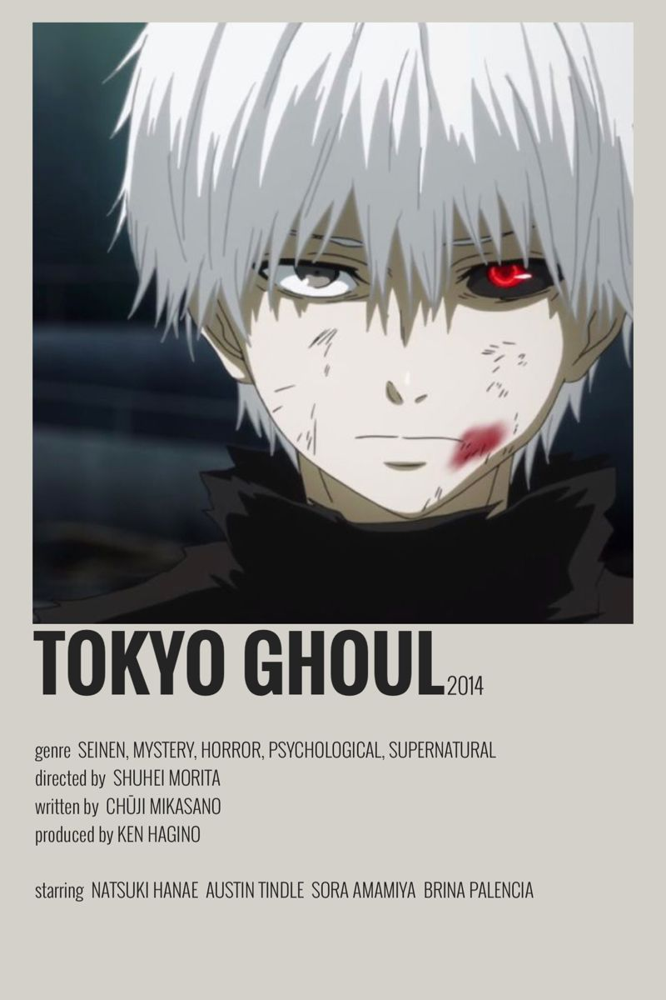
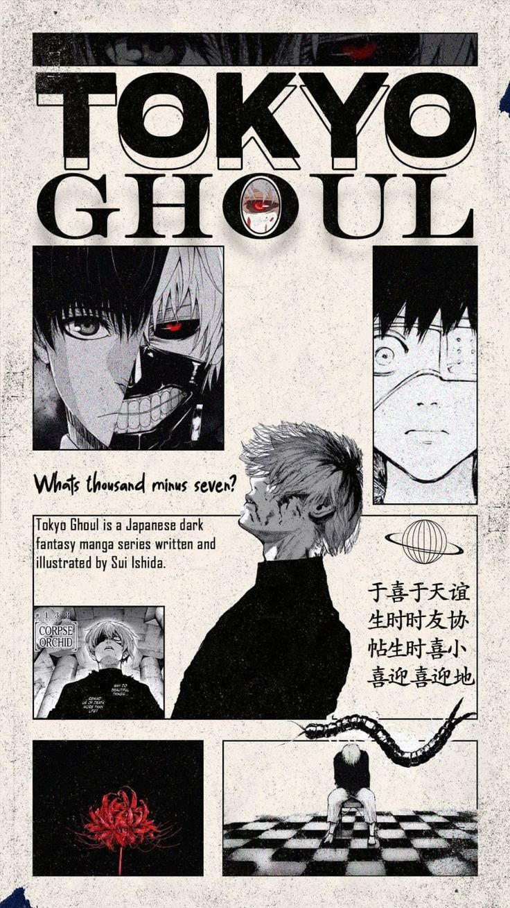

Welcome to Anteiku, a unique website that is inspired by my most favorite anime of all times TOKYO GHOUL
Explore Now Here at Anteiku, we aim to provide you with the best content related to Tokyo Ghoul, including character profiles, episode summaries, and fan theories.
Whether you're a long-time fan or new to the series, there's something for everyone to enjoy.
We also have a section dedicated to fan art and fan fiction, where i share another animes i personally enjoyed in my anime watching era
Characters
Episodes
Volumes
In Tokyo, man-eating ghouls run coffee shops, hide their kagune, and still apologize more than New Yorkers.
Grumpy man with giant sword fights demons, angry angels, and his own bad luck. Friends? Cursed. Therapy? Nonexistent.

| 📚 Manga Reading Order | 🎬 Anime Watch Order (Release Order) |
|---|---|
The mask of the One-Eyed King, a prominent symbol in the Tokyo Ghoul series, holds deep significance within the story.
It represents the duality of Kaneki Ken's identity as both a human and a ghoul.
The mask serves as a visual representation of his struggle to reconcile these two aspects of himself.
The design of the mask, with its single eye and menacing appearance, reflects the inner turmoil and the dark path that Kaneki must navigate as he embraces his ghoul nature while trying to hold onto his humanity.
The mask also symbolizes the hidden and dangerous world of ghouls, as well as the fear and mystery that surrounds them in the Tokyo Ghoul universe.
Berserk - This is one of the most interesting and traumatized anime I have ever seen in my entire existence, I might add.
AND of course the manga is more fascinating as it should be.
The helm of the Berserker, worn by Guts in the Berserk series, stands as one of the most harrowing symbols in dark fantasy.
It represents the annihilation of Guts' humanity in exchange for raw, monstrous power.
The helm serves as a physical manifestation of his rage and self-destructive will to survive at any cost.
The design of the helm—a snarling, dog-like face with hollow, shadowed eye slits and jagged, fanged teeth—reflects the complete surrender to the Beast of Darkness within. While Guts wears it, pain vanishes, reason collapses, and friend is indistinguishable from foe, as he literally becomes a mindless engine of slaughter.
The helm also symbolizes the cost of fighting monsters: to protect those he loves, Guts must become a monster himself. It is a curse born of necessity, a constant reminder that his journey is eroding his soul, and that the line between the man and the demon grows thinner with every use.
| 📚 Manga Reading Order | 🎬 Anime Watch Order (Release Order) |
|---|---|